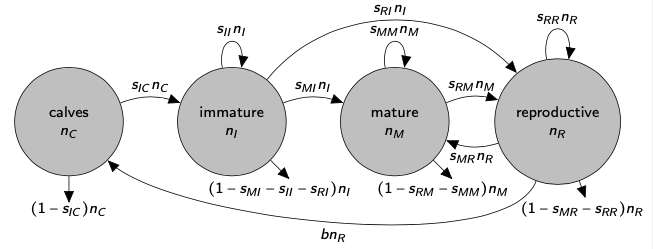
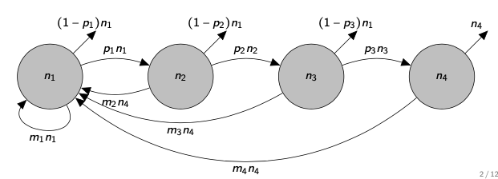

Lecture 15: Demography
Lecture overview
1. Demography
We're now going to use what we've learned about linear multivariate models to describe the dynamics of a single population that is composed of different types of individuals.
This area of research is called demography.
The most general case of this is called stage-structure: we consider some finite number of discrete stages that an individual can fall into, and we use a matrix of transition rates between stages (a projection matrix) to project how the population size and composition changes over time (we'll assume discrete time).

A common special case is age-structure: here we define the stages as the number of time steps an individual has been alive for, which leads to a special, simple projection matrix called a Leslie matrix.

2. Stage-structure
In the last lecture we saw that for any linear multivariate model
we can compute the general solution
or, more conveniently, as
Despite this progress, the eigenvalues (\(\mathbf{D}\)) and eigenvectors (\(\mathbf{A}\)) are often unobtainable (without specifying parameter values), leaving us to rely on the approximation
For this we just need to know the leading eigenvalue (\(\lambda\)) and the corresponding right (\(\vec{u}\)) and left (\(\vec{v}\)) eigenvectors, respectively (represented as column vectors, and normalized such that \(\vec{v}^\intercal \vec{u} =1\)).
These three components (\(\lambda\), \(\vec{u}\), \(\vec{v}\)) are what we'll investigate.
Formulation
Therefore, if we once again consider
the stage-structure is model is specified such that \(\lambda\) is the long-term population growth rate, \(\vec{u}\) describes the stable stage-distribution, \(\vec{v}\) describes the reproductive values of each stage, \(\vec{v}^\intercal \vec{n}(0)\) describes the total reproductive value at time 0
This approximation is valid as long as the leading eigenvalue, \(\lambda\), is
- real (no cycles in long-term)
- positive (no oscillations to negative numbers!)
- larger than all other eigenvalues (so that we can ignore the other eigenvalues/vectors)
Fortunately we are guaranteed all these conditions in our demographic models!
(Since all entries of \(\mathbf{M}\) are non-negative and all entries of \(\mathbf{M}^t\) are positive for some value of \(t\), this follows from something called the Perron-Frobenius Theorem).
Example: Right whale model
For the right whale model described graphically below
we have
and if we plug in some parameter values (\(s_{IC}=0.92, s_{II}=0.86, s_{MI}=0.08, s_{MM}=0.8, s_{MR}=0.88, s_{RI}=0.02, s_{RM}=0.19, s_{RR}=0, b=0.3\)) we can calculate
which tells us, for example, that, in the long-run, the population will grow (\(\lambda>1\)), the majority of individuals will be mature, and mature and reproductive individuals have much higher reproductive values than calves and immature individuals.
One question we might now consider is how the long-term growth rate, \(\lambda\), changes with some parameter, \(z\) (e.g., \(z=b\)).
We could numerically calculate \(\lambda\) for a range of \(z\) values.
Or, we could compute \(\mathrm{d}\lambda/\mathrm{d}z\) while considering \(\mathbf{M}\), \(\lambda\), \(\vec{u}\), and \(\vec{v}\) as functions of \(z\). We call this the \textbf{sensitivity} of \(\lambda\) to \(z\).
Since \(\mathbf{M}\vec{u} = \lambda \vec{u}\) and \(\vec{v}^\intercal\mathbf{M} = \vec{v}^\intercal \lambda\) we have
This will be hard to do in general, but we can evaluate at some particular value \(z^*\)
We can now ask (and answer!) a couple of questions:
-
If we wanted to increase the total population size in the future, and we could add one individual to any stage, which stage should it be?
We want to know what entry of \(\vec{n}(0)\) to add 1 to to maximize \(\vec{n}(t) \approx \lambda^t \vec{u} \vec{v}^\intercal \vec{n}(0)\). This will not affect the long-term growth rate (\(\lambda\)) or the stable-stage distribution (\(\vec{u}\)). We can therefore only increase \(\vec{v}^\intercal \vec{n}(0) = v_1 n_1(0) + v_2 n_2(0) + ... + v_m n_m(0)\). And so we add 1 to the stage with the largest reproductive value, \(v_i\).
In the whale example we had \(\vec{v}^\intercal = (0.69, 0.76, 1.07, 1.15)\), so we should add a reproductive individual.
-
If we wanted to increase the long-term population growth rate, and we could increase any parameter a little bit, which parameter should it be?
Here we want to know which parameter, \(z\), gives the largest value of \(\frac{\mathrm{d}\lambda}{\mathrm{d}z} \big|_{z=z^*}\).
In the whale example increasing \(s_{RM}\), the probability a mature individual becomes reproductive, has the largest effect.
3. Age-structure
Now let's look at the special case of age-structure.
Here individuals in stage \(i\) at time \(t\) can only contribute to stage \(i+1\) (survival) and stage \(1\) (reproduction) at time \(t+1\).
Because of this, the projection matrix is particularly simple
and we call it a Leslie matrix.
Many expressions are now simpler.
For example, the characteristic polynomial, \(\mathrm{Det}(\mathbf{L}-\mathbf{I}\lambda)=0\), can be calculated using the first row, and after rearranging we get what is known as the Euler-Lotka equation
where \(l_i = p_1 p_2 \cdots p_{i-1}\) is the probability of surviving to age \(i\).
Given the \(l_i\) and \(m_i\) we can use this equation to find the long-term growth rate, \(\lambda\).
For example, let's look at a model of stickleback, a small fish.
We assume stickleback do not live more than 4 years, and estimate the Leslie matrix as
The first row gives \(m_1=2, m_2=3, m_3=4, m_4=4\) and the survival probabilities give \(l_1=1\), \(l_2=0.6\), \(l_3=(0.6)(0.3)=0.18\), \(l_4=(0.6)(0.3)(0.1)=0.018\).
The Euler-Lotka equation is then
which can be solved by SymPy/SageMath (or whatever) to give \(\lambda\approx2.75, -0.3 \pm 0.3i, -0.14\).
The long-term growth rate is therefore \(\lambda=2.75\).
With age-structure can also write the stable age distribution, reproductive values, and sensitivities as functions of survival, fecundity, and population growth.
The proportion of individuals that are age \(x\) (in the long-run) is
The reproductive value of individuals that are age \(x\), relative to age \(1\), is
The sensitivities of the long-term growth rate to survival and reproduction at age \(x\) are
For example, in our stickleback model the proportion of the population that is age \(x=2\), in the long-run, is
and the relative reproductive value of age \(x=2\) individuals is
Repeating these for the other ages we get the stable-age distribution
and the reproductive values
which we can then use to get the sensitivities of the growth rate to survival (\(\frac{\mathrm{d}\lambda}{\mathrm{d}p_x} = \frac{u_x v_{x+1}}{\vec{v}^\intercal \vec{u}}\))
and to fecundity (\(\frac{\mathrm{d}\lambda}{\mathrm{d}m_x} = \frac{u_x v_1}{\vec{v}^\intercal \vec{u}}\))
And so we see that, because such a large proportion of the population is expected to be age 1, increasing the survival and fecundity of that age has the biggest effect.